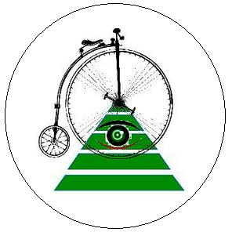

ParaBicychologie
- Accueil >>> Le Mont-Saint-Michel
Le Mont-Saint-Michel. Site officiel : Mont-Saint-Michel
Site : Abbaye du Mont-Saint-Michel.
Lieu : commune Le Mont-Saint-Michel, département de la Manche.
Lien vers l'album photo sur Picasa (ouvre dans une nouvelle fenêtre)
Website © Copyright - ef. Bicy Gonzo.